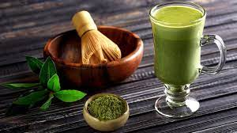

Te Negro

El té negro provoca efectos parecidos a los del café, aunque es más
saludable. Se trata de una bebida que aporta energía y que expande la
cafeína a gran velocidad en la sangre sin causar perjuicio al corazón.
Este tipo de té ayuda a rebajar el nivel de colesterol y contribuye a
controlar el nivel de estrés. También tiene efectos adelgazantes porque
ayuda a la quema de grasas.
Te Matcha

El té matcha, englobado en la categoría de tés verdes, es realmente
beneficioso. Tiene efectos adelgazantes y ayuda a controlar el estrés y
a dotar de cierta relajación a nuestro organismo. Esto se debe a una
sustancia (L-teanina) que incentiva el relax y evitando provocar un
aumento de azúcar en sangre. Aporta energía y sirve para evitar el
estreñimiento. También provoca efectos que fortalecen el sistema
inmunológico y no causa somnolencia.
Te Verde

Es el té por excelencia y probablemente el que más se consume. Tiene,
como todos, propiedades antioxidantes y tiene poca cafeína. Estos
antioxidantes cooperan para la prevención del cáncer y de enfermedades
neurológicas como el Parkinson o el Alzheimer. Como todos los tés, tiene
propiedades que permiten controlar el nivel de colesterol. El efecto más
publicitado de los que provoca el té verde es el de mejorar el estado
cerebral y fortalecer la capacidad de memoria. Además, también ayuda a
conseguir concentración.